Get ready for sound
The Record
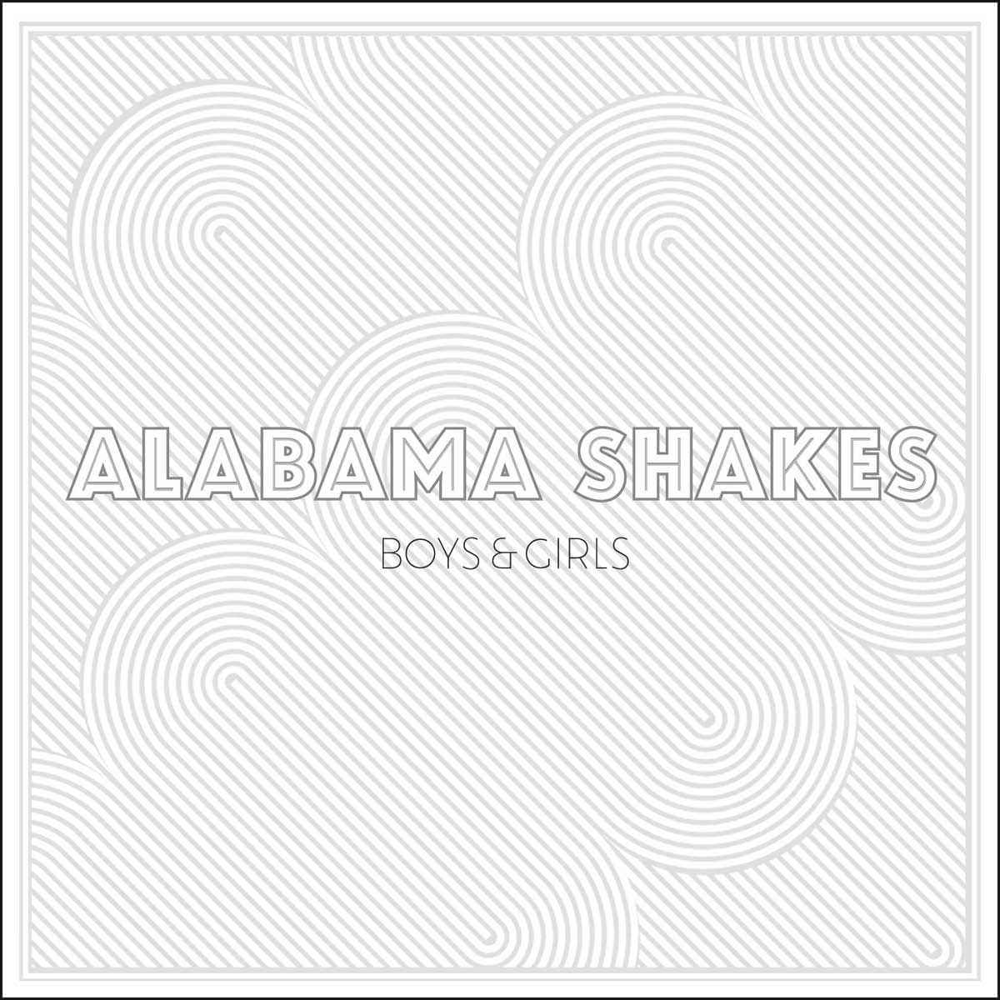The Alabama Shakes' first album, "Boys & Girls," is an electric jolt that anyone who loves blues-based rock music should track down immediately.
fromLA Times
Boys And Girls is a wild album, an honest collection visibly drenched in blood, sweat and tears.
fromPretty Much Amazing
The Shakes make rock & soul music as if the last 40 years of popular sounds had never happened; you won't hear a single hip-hop rhythm, disco beat, tripped out guitar effect or dubstep bass drop on "Boys & Girls."
fromLA Times
It's not a time-warp, but instead sounds like a concoction several decades in the making; it's chronologically ambiguous. Rather than borrowing styles verbatim from different time periods, it's more like Alabama Shakes takes on the persona and emotions of those periods instead: angst from the 70s and soul from the 60s swirled with lightheartedness from the 50s.
fromPretty Much Amazing
"We've got country influences, rockabilly, gospel, indie-rock,"
Brittany Howard, Lead Singer
Songs suggest that sweet period from 1966 to 1974 when electric blues and rock music were intermingling: the Rolling Stones circa "Let It Bleed," Janis Joplin at her 1968 peak and Otis Redding and the classic Stax Records house band on "Heartbreaker." You can even hear a hint of Bob Marley-esque roots reggae guitar on the opening song, "Rise to the Sun."
fromLA Times
The Show
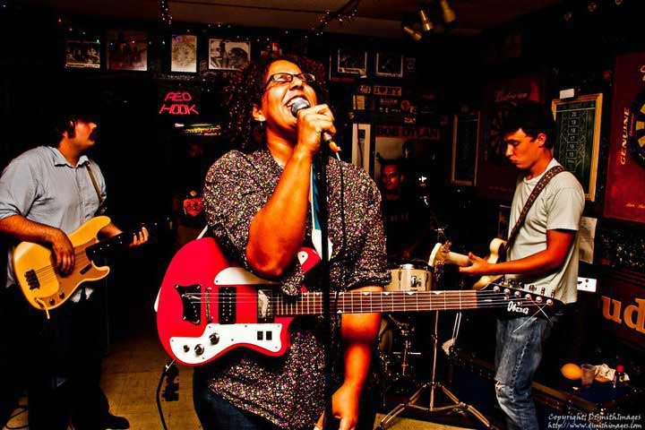"Bless my heart, bless my soul" is the first line of their debut album and breathes the essentials of their live show, restoring faith into the audience of the euphoric possibilities of live music.
fromOwl and Bear
On this particular night, the Alabama Shakes' sudden rise to fame proved to be the great equalizer among us lucky audience members. It was a truly profound and unique experience to know that virtually everyone in attendance was seeing the group for the very first time.
fromConsequence of Sound
Soulful songstress Brittany Howard and the members of Alabama Shakes transformed the sold-out House of Blues into a tiny, crowded, Deep South southern bar on a warm summer night.
fromOwl and Bear
Like a Southern preacher, Brittany Howard wagged her finger and strutted across the small stage while belting out her signature soul-drenched howl that falls somewhere between Howlin' Wolf and Janis Joplin.
fromConsequence of Sound
Alabama Shakes are best described as Americana soul blues, and seeing them live is comparable to coffee on a rainy Sunday morning reading the New York Times.
fromOwl and Bear
Looking out at the cheering crowd one last time as they walked off stage, Brittany Howard said into the microphone, "You all look so cool out there. Makes me wish I was cool too!" Don’t worry, Brittany. You’re doing just fine.
fromConsequence of Sound
- 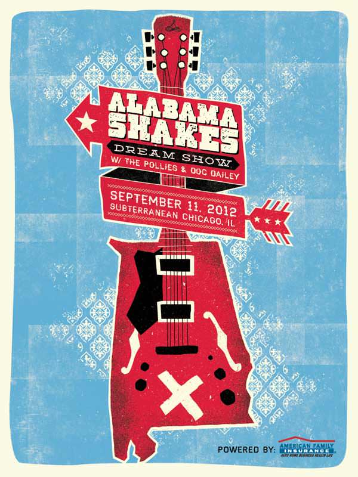
- 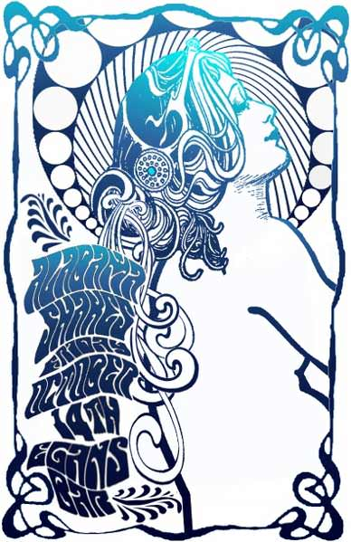
- 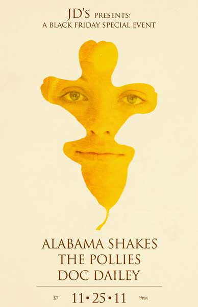
- 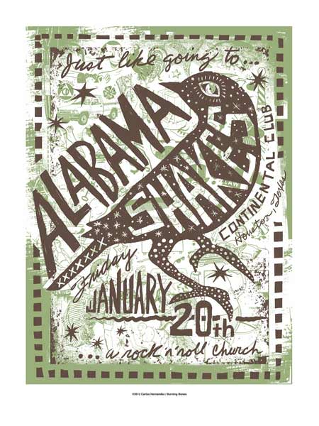
- 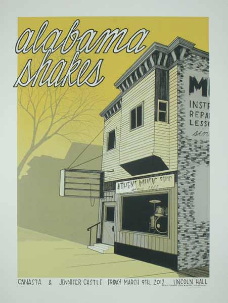
- 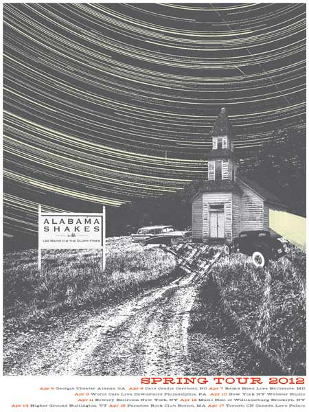
- 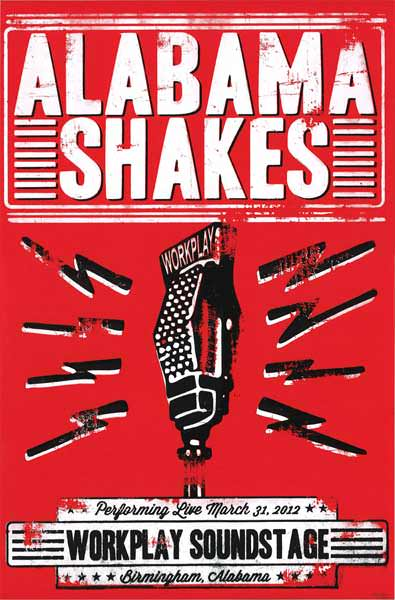
- 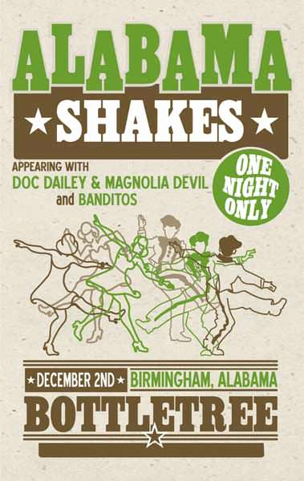
- 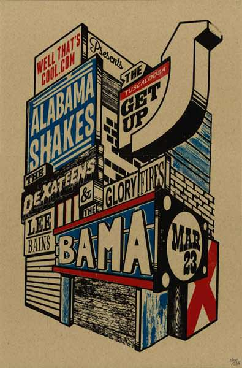
- 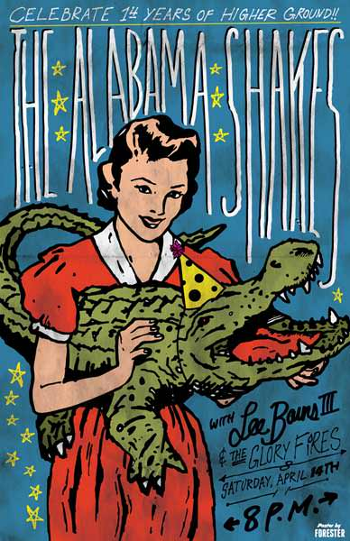
- 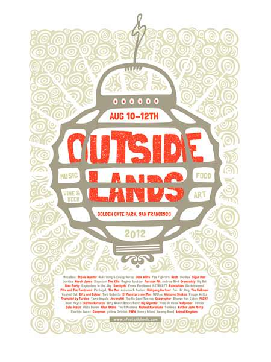
- 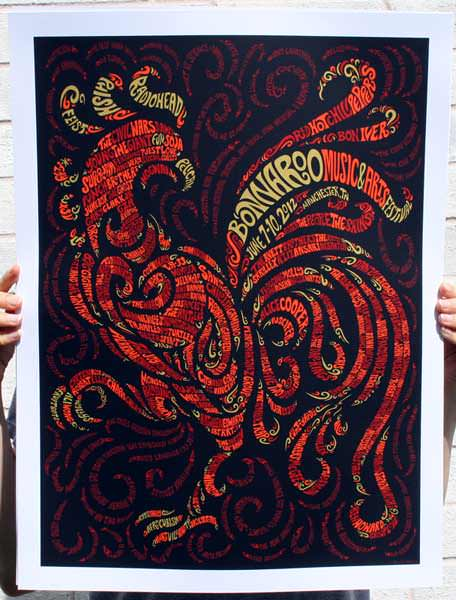
- 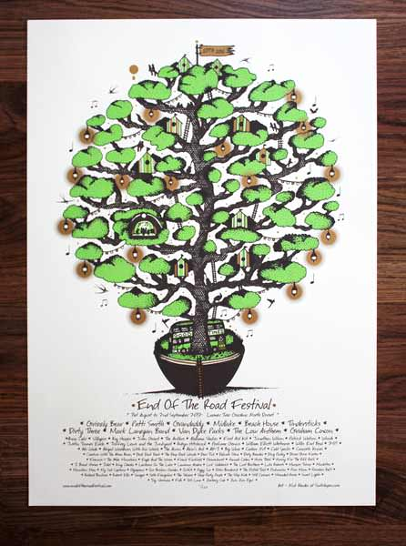
- 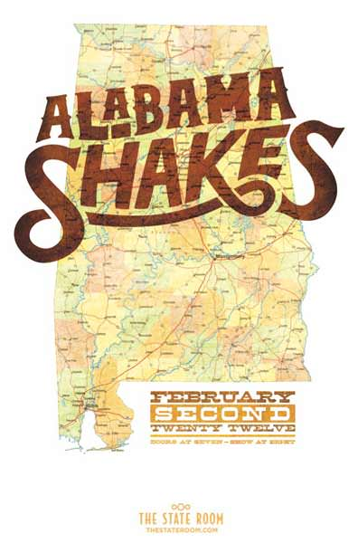
- 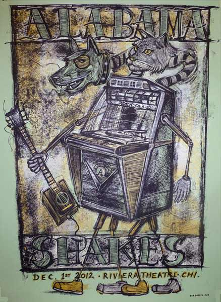
Lead Singer
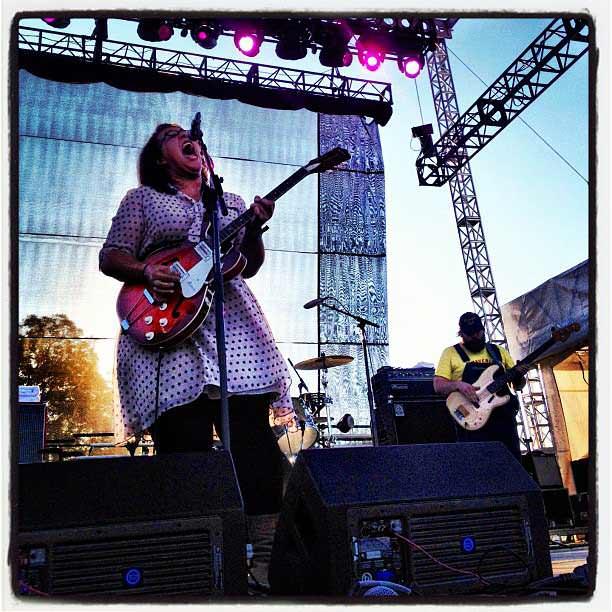The real spotlight undoubtedly shines on the extremely amiable vocals of Brittany Howard, who also wields a mean guitar. Howard's beautifully heart-wrenching voice rasps at just the right places, pouring out clear, intense emotion and soul that she packs tightly into her delivery throughout the album.
fromPretty Much Amazing
Like Joplin in 1970, Brittany Howard is assembling a persona with great intelligence and forethought, diving into the wreck of music history and coming up with treasures we can use. The difference is, Brittany Howard is on the way up. Fast.
fromHollywood Reporter
Brittany Howard, the band's 22-year-old singer-guitarist, has quickly established herself an audacious presence via a clutch of YouTube clips, a kick-ass live show, and (strangely enough) a 2011 Zales commercial that featured the moving showstopper "You Ain't Alone."
fromSpin
Brittany Howard has generated waves of comparisons to Janis Joplin and Otis Redding. Howard is utopian nostalgic yearning manifested: an African-American woman whose searing cry and sweaty, passionate performances recall everything that made late-'60s soul and rock so meaningful and memorable.
fromSpin
The Story
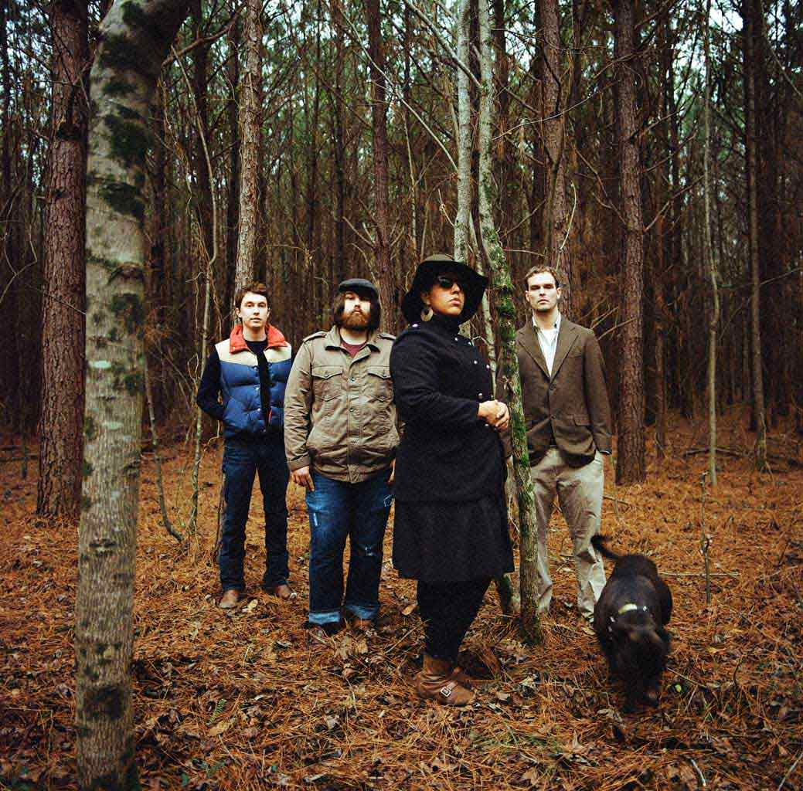The story of the Alabama Shakes begins in a high school psychology class in Athens, Alabama. Brittany Howard, who had started playing guitar a few years earlier, approached Zac Cockrell and asked if he wanted to try making music together. "I just knew that he played bass and that he wore shirts with cool bands on them that nobody had heard of," says Howard.
fromSpin
- 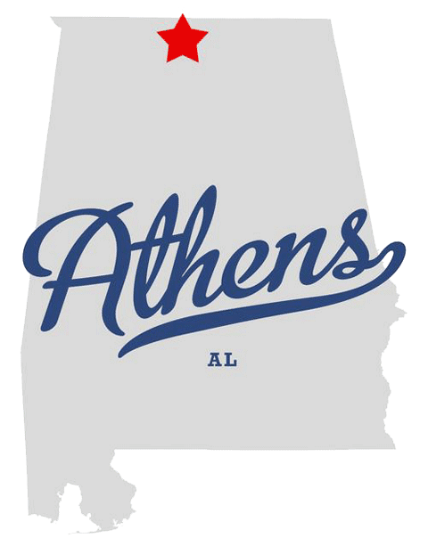
They started to meet up after school and write songs sitting on Howard's floor. "It had that rootsy feel, but there was some out-there stuff," says Cockrell. "David Bowie-style things, prog-rock, lots of different stuff. We started to come across our own sound a little bit, though it's evolved a lot since then."
fromSpin
Steve Johnson worked at the only music store in town, and Howard knew he played the drums. "Steve is kind of a punk-metal drummer," says Howard, "so we embraced that edge he brings to everything he does."
fromSpin
The trio soon went into a studio in Decatur to record some of the songs they were working up, and this proto-demo found its way into the hands of Heath Fogg, with whom Howard had been familiar because he had been the lead guitarist in what she describes as "the best band in our high school." Fogg, who by now had graduated from college, asked them to open a show for his band, which they agreed to do on the condition that he play with them. The response was immediate: "That first show was really explosive," says Howard."
fromSpin
Contributors
- Curation, Design, & Development@NateLassiter
- Curation@MelissaJoyKong
- Design@Harbinowitz
- Design & Development@NoMoreGoodNames
- Development@YourFriendBrett
 Design@Jordanbear
Design@Jordanbear